Cherry Chip Layer Cake
~ raw, vegan, gluten-free, nut-free ~
Below in the ingredient list, you will be directed to another post that instructs you on how to make the Cherry Chip cake batter. There you can read my little story behind my love for cherry chip cakes.
I am pretty sure that I am not the only one for whom many of life’s most intimate details come flooding back at the sight, smell, and taste of particular foods. I have to think that everyone has a favorite dish in which they can recall specific moments of their lives.
In this case, the taste and site of a cherry chip cake are capable of painting a picture with richer, deeper brush strokes than any snapshot in my photograph album. Memories of food and the parts where certain “crumbs” play in people’s lives fascinate me. If you have a favorite cake and a memory attached to it, I would love to hear about it.
Ingredients:
6-8″ cake pan

Preparation:
- I recommend using a pan that has a removable bottom. Cover that bottom disc with plastic wrap for ease of removal when you are ready to place it on a serving platter or cake stand. Set aside.
- Press 3 1/2 cups of cake batter into the bottom of the pan. Do this firmly and evenly.
- Spread 1 cup of frosting on top of the cake layer.
- Be gentle so that you don’t dig into the cake layer.
- Spread it nice and even. These layers will show when the cake is cut.
- If the frosting is soft, place the cake in the fridge for at least an hour to firm up before adding the top layer of the cake.
- When applying the top layer of cake, drop the batter in clumps, evenly around the cake pan.
- Once all the mixture is used, gently and evenly press the cake batter down… even and smooth.
- Place in the fridge until the cake firms up a bit before removing and adding the outer frosting.
- Frost the cake. How to frost a cake. Click here.
- Decorate the cake. You can be as creative as you want.
- After smoothing the sides and top of this cake, I did the “rope” technique around the top and bottom of the cake. You can search YouTube for quick videos for different techniques.
- I decorated the top of the cake with frozen cherries. If you use frozen fruit, keep in mind that they release juice as they thaw and this can run on your cake.
- This cake will keep for 3 days in the fridge or the freezer for 2-4 weeks.
- Tip on how to slice a cake. Click here.
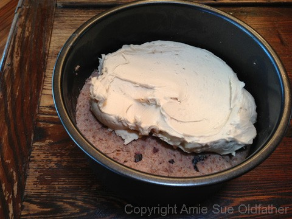
Press 3 1/2 cups of cake batter into the bottom of the pan. Make it nice and even.
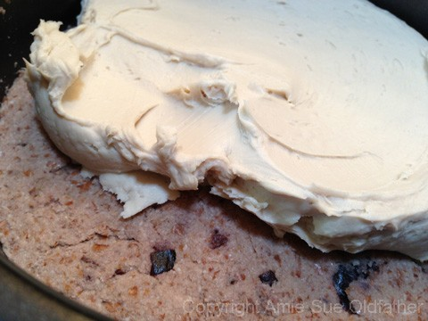
Spread 1 cup of frosting on top. Again, nice and even.
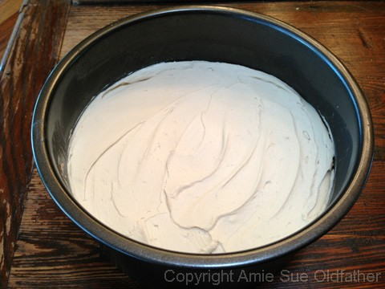
If your frosting is too soft, place in the fridge until it firms up before moving on to the next step. If you put the next layer on while the frosting is soft, it will push down into it, effecting the nice clean look when cut.
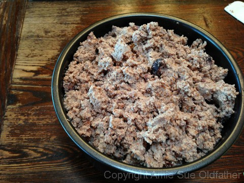
When placing the top layer of cake on the frosting, drop it in forms of clusters, evenly all around the pan.
After all the batter is used, then gently but evenly press the cake batter down, so it is compact and smooth on top.
Place in the fridge to firm up a bit.
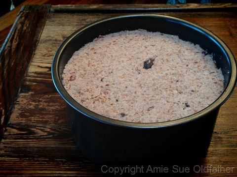
I bet you are scratching your head on this picture? Just what the heck is that all about?
I thought I would just show you how thick this frosting was, lol. This was after 2 hours on the counter!
Ok, back to business! Look at this bowl of luxuriousness!
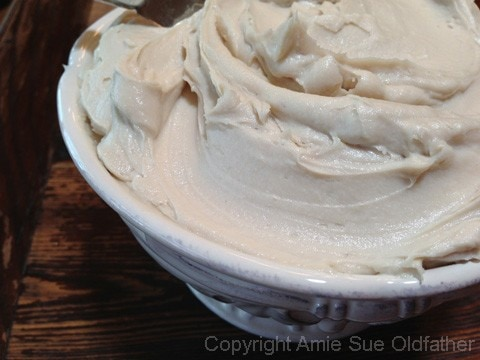
I love this pan, it is sort of like a Springform pan but doesn’t have the latch on the side.
It allows you to push the cake up and out of the ring. Or in this case, I tipped it upside down and pushed the
cake out of the ring, right onto the serving platter.
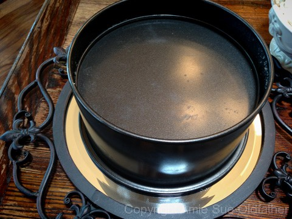
After removing the ring, I just had to lift off the “base.”
Do this slowly and carefully making sure that you don’t remove parts of the cake with it.
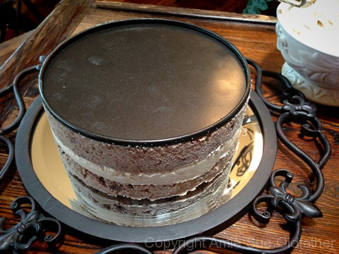
I used this tip for creating my decorative rope edging. You can create your own design.
I recommend practicing first but making a few runs on a cutting board where you can
scoop up your practice frosting and put it back in the bag.
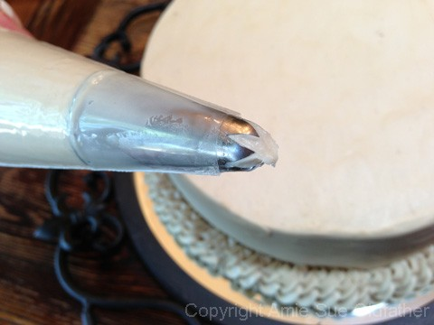
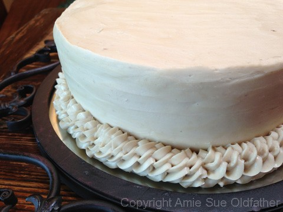
I repeated the same rope technique on the top edge of the cake.
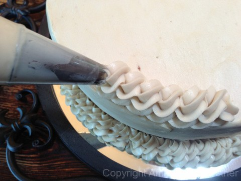
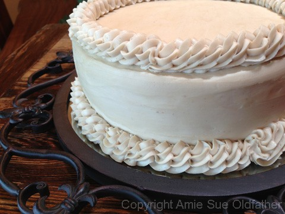
To be honest, I was nervous to put the cherries on the cake because they were juicy and
I knew they would stain the frosting if I didn’t like it. So I took the base of that pan from above and
laid my cherry pattern on it, just to make sure that I had enough to get the job done.
And to make sure that I liked the look of it.
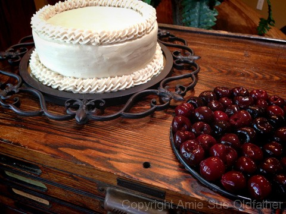
I hesitated….aaaaah! Just put the cherry down Amie Sue! hehe
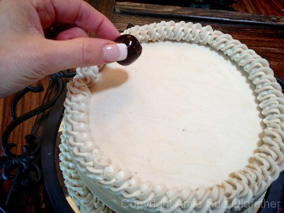
Shew, I did it, no turning back now.
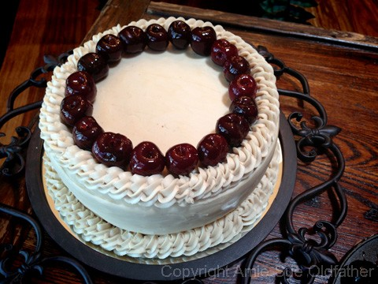
Around and around I went.
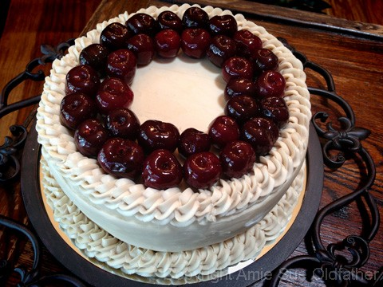
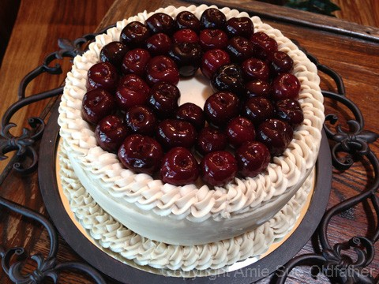
I was pleased with the outcome.
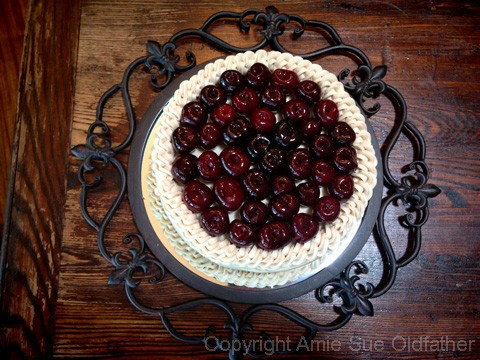
Now, to cut the cake. This part also gets me nervous. I posted a link up in the directions on how to cut a cake.
It may seem like a no-brainer, but if you want those pretty, clean cuts… I suggest reading it over.
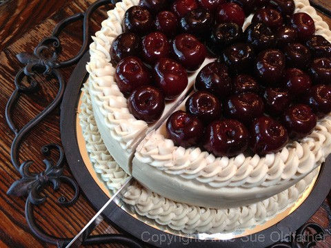
Ok, the cuts for the first piece have been made! Phew, I need a drink.
Oh, ice tea that is! Now to lift it up and out and see what the inside looks like… fingers crossed…
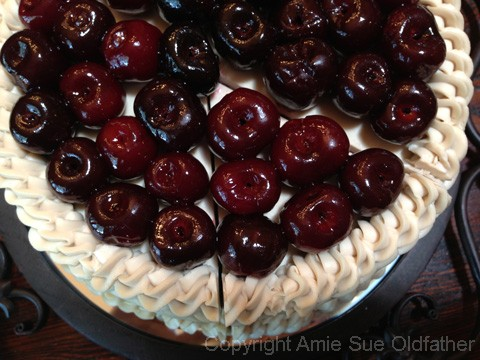
Oh lovely! Just lovely! Now I can breathe. :)
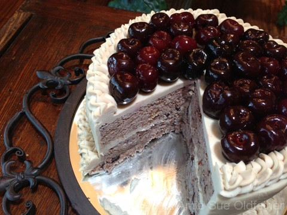
I am in love….my first raw Cherry Chip Birthday Cake!
© AmieSue.com